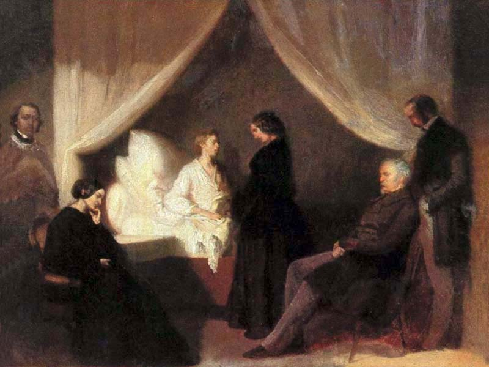
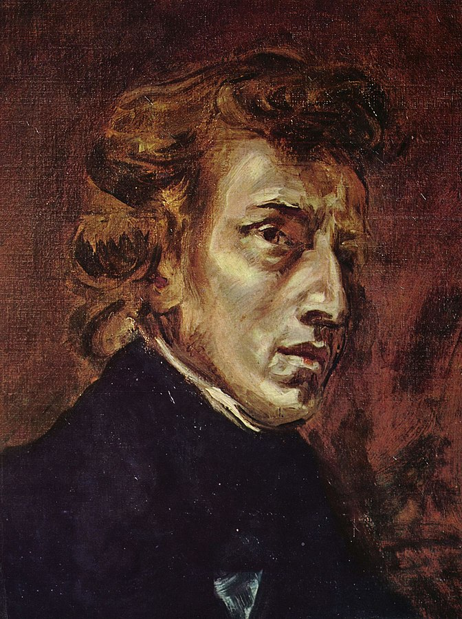

In his short life, Frédéric François Chopin has composed a large number of piano works, such as 4 narrative pieces, more
than 10 Polish dance pieces including "Army" and "Hero", 26 piano preludes including "Raindrop", 27 piano exercises including
"Parting" and "Revolution", 4 harmonicas, 4 improvisations, 3 piano sonatas, at least 21 multi-night pieces, 59 mazurkas, two
piano concertos, fantasies, cello sonatas and lullabies, etc. Chopin was known as the "poet of the piano" and composed most
of his works for the piano.

Piano plays an important role in Chopin's composed artworks. Although many of his works are technically difficult, he never
aims to show off his skills, and Chopin's works are more poetic and delicate.
 As a Polish composer, Chopin made landmark contributions to the Polish dance music and mazurkas of his homeland. The earliest of these works is the Polonaise in G minor from 1817, when Chopin was just seven years old. Chopin composed Polonaise throughout his life, and many of the Polonaise works of his youth ended up unpublished because he considered them too monotonous. Focusing first on the works of pioneers Karl Maria von Weber and Johann Nepomuk Hummel, Chopin's works completed in Paris thereafter are full of longing and longing for his native Poland, and some of his surviving Polish dances (e.g. Nos. 1, 5, 6, etc.) have a flamboyant movement as their opening. The mazurka, unlike Polish dance music, was still a fairly new musical form in the early 19th century, but it soon became popular throughout Europe. Chopin listened to mazurkas not only in city salons, but also in Poland in their folkloric primitive form. The most characteristic feature was the brilliant use of chromatic scales, and mazurkas from Op. 6 (1830-1832) onwards mostly used the cyclic form. In general, these works by Chopin do not lend themselves to dance, as they are mostly too fast-paced, as are his waltzes. Chopin's waltzes were mostly written for the salon. Another form of music developed by Chopin is the nocturne, of which there are 21. His nocturne works were largely influenced by the Irish composer and pianist John Field, the inventor of the nocturne, and Chopin's nocturne works sound more harmonious, full of changing rhythms, and more flexible in tune, in the style of American singing. The 24 piano preludes were composed during Chopin's brief journey in Majorca and follow a cyclic sequence of fifths, beginning in C major and ending in D minor, alternating major and minor keys. The 27 piano exercises, 12 each from Op. 10 and Op. 25, and three new exercises, the last three published after Chopin's death, demand a high level of playing technique while being ideally suited for concert performances, represented by the Revolutionary Exercises in C minor (Op. 10 No. 12). Chopin brought the études to a new level, whereas previous études, such as those by Karl Cherny, were mostly focused only on pedagogical purposes, and later Liszt Ferencz, Alexander Scriabin and Claude Debussy also made developments to the études. It has been an essential exercise and a milestone in piano technique for pianists and voice students throughout the generations and has been performed and recorded by numerous pianists. In addition to this, Chopin composed four narrative pieces and four witty pieces, all of which are quite exquisite. The representative work among Chopin's improvisations is the Fantasy Impromptu in ascending C minor, which was published only after Chopin's death, because Chopin was reluctant to publish it after he had finished composing it because he realized that the middle section of the work was strikingly similar to a piano work by the Bohemian composer Ignaz Moscheles (1794-1870).
Chopin's vast piano output includes only three sonatas, at a time when the strict demands of Viennese classical music on musical form made it impossible for Chopin to master them comfortably, or perhaps Chopin simply did not want to be bound by form. Chopin's first sonata was composed early and dedicated to his teacher Józef Elsner, and his third sonata (op. 58, 1844) is a monumental work. The most popular is the Piano Sonata No. 2, the third movement of which is the famous Marche Funèbre (Funeral March).
In addition to his solo works, Chopin has 2 piano concertos, No. 1 (in E minor) and No. 2 (in F minor). In addition to the concertos, Chopin also composed several single-movement works for piano and orchestra, such as op. 2 "Come! Let's hold hands" variation, op.13 Grand Fantasy on Polish Songs, op.14 Clarkovic, op.22 Gorgeous Allegro and Grand Polonaise.